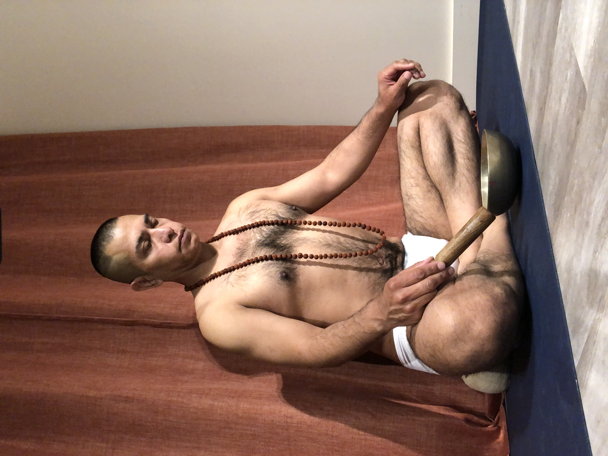

Hi, I'm Michael Angelo
I'm Michael Angelo, a yoga instructor and personal trainer devoted to helping people move better, breathe deeper, and feel more at home in their bodies. My teaching blends classical yoga principles with modern movement science, always grounded in compassion and curiosity.
My own journey began over thirty years ago, when I turned to yoga as a way to manage chronic health conditions. What started as a simple stretching practice became a lifelong path of learning, healing, and service.
Today I work with students and private clients of all ages and backgrounds, from complete beginners to experienced practitioners. I believe yoga and personal training are not about achieving perfect shapes; they're about showing up, paying attention, and meeting yourself with kindness.
Credentials
A.S. Exercise Science, Registered Yoga Teacher (RYT-200), certified personal trainer, certified group fitness instructor, certified health and wellness coach, ongoing training in yoga therapeutics, breathwork, and mindfulness-based stress reduction. First aid certified.
